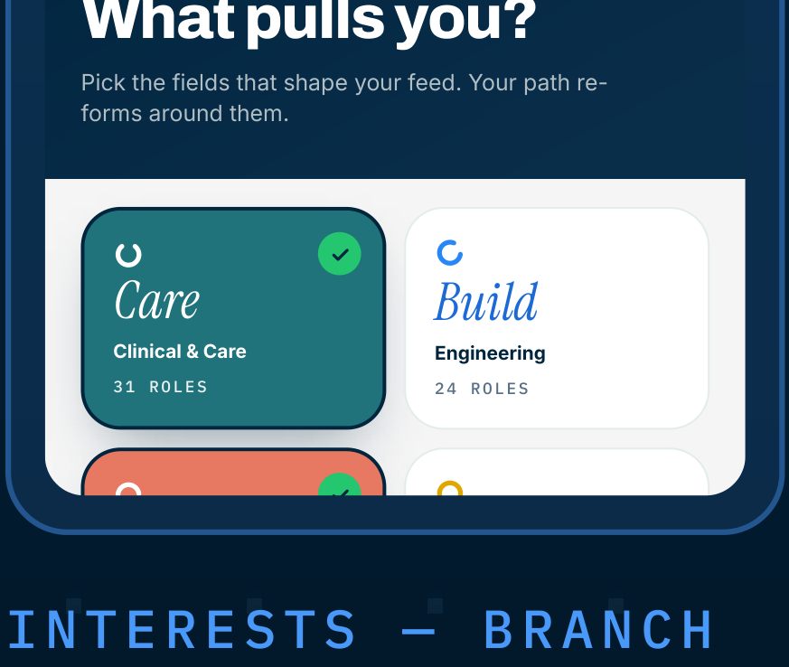

PEOPLEGROVE V2 — OPPORTUNITY HUBBEAT 16 · VERBS THAT BEHAVE
CLINICAL & CARECa
re31 ROLES
ENGINEERING
BuildBuildBuildBuild
24 ROLES
DESIGN & MEDIACreateaeo18 ROLES
Discover Discover
Discover DiscoverRESEARCHDiscover
12 ROLES
abcdefghijklmnopqrstuvwxyz
Still exploring? Let the feed surprise you for a week.

THE TRUE INTERESTS SCREEN — a–z MARK PROOF PASS @16/20/24px